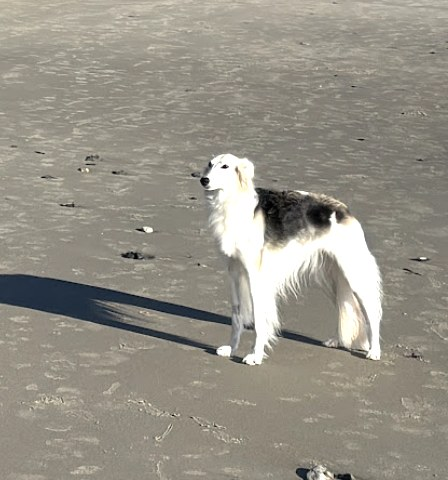
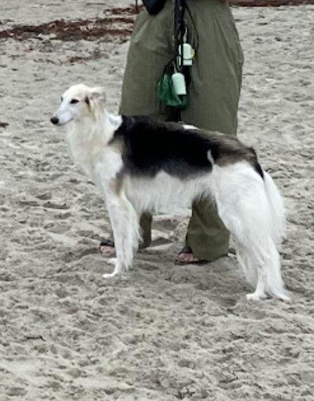
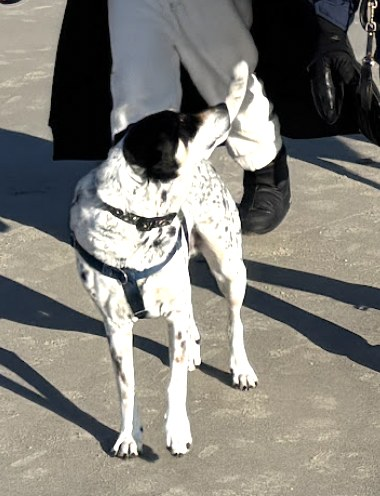

Champion Silken Windhounds
Two sighthounds. Four seasons. One beach that will never be the same. Portland's fastest and fluffiest coastal patrol, on duty since forever (in dog years).

Vital Statistics
Silken windhounds are built for speed, born for couches, and — in Thea and Umi's case — sworn to the shoreline. Independent judges (us) confirm the following career statistics.
Field Notes
From July fog to January glare, the patrol never stops. Selected moments from the archive.


Accolades
A partial list. The trophy shelf is a couch, and they are always on it.
Undefeated across all Portland-area sand, wet or dry conditions.
Awarded for consistently excellent posing against the tide line.
July fog, January snow — the shoreline is never unsupervised.
Recovery is part of the training program. They take it seriously.